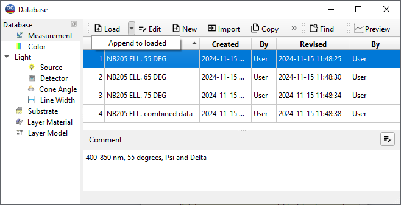

Loading data from OptiChar database
- To use data stored in OptiChar databases, the user must first
load the corresponding data into the computer memory. To load a database file of any type, activate the Database Access Dialog. This can be done by selecting the respective item from the Data Menu or using the OptiChar Toolbar.
- Once the Database Access Dialog is open, you can proceed to
select and load the desired database file.

- After selecting the required data, please press the “Load”
button. If the data currently stored in the memory has been modified but not saved, you will receive a warning notification.
Note: In some cases, you may need to use the right-click menu of the Database window or the down-arrow button located next to the “Load” button to access additional load options. Measurement data can be added to the existing data already stored in memory using the “Append to loaded” function.
- To view the data that is currently stored in the memory, please
check the “General Information Window“.
- If you have made changes to your measurement data or design,
please refer to the “Saving Current Design and Measurements“ commands located in the Data menu.